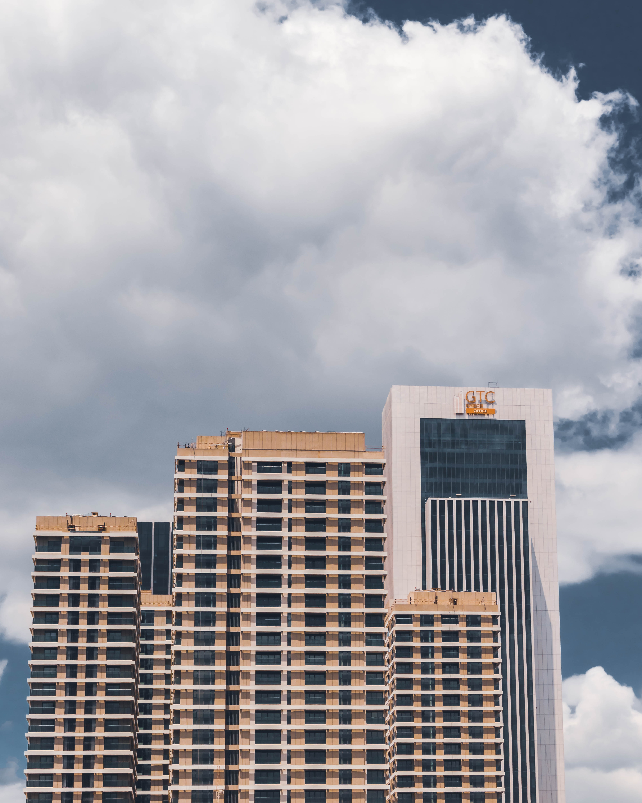
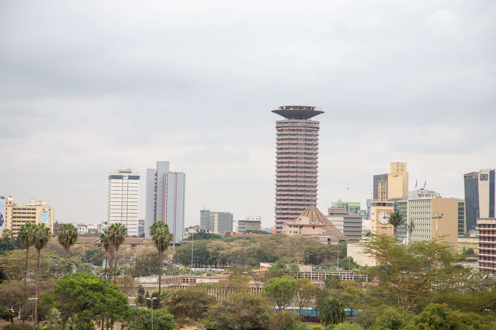
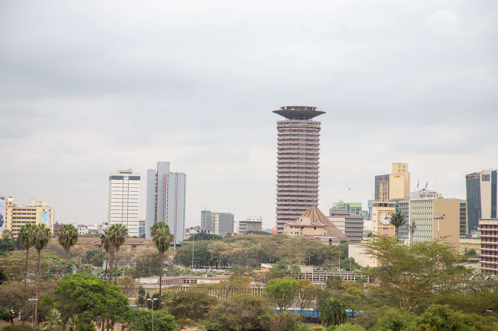
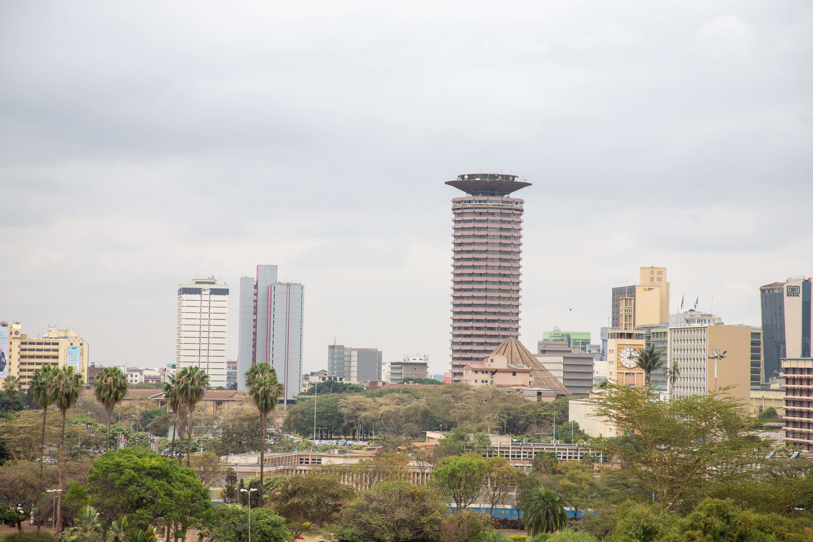
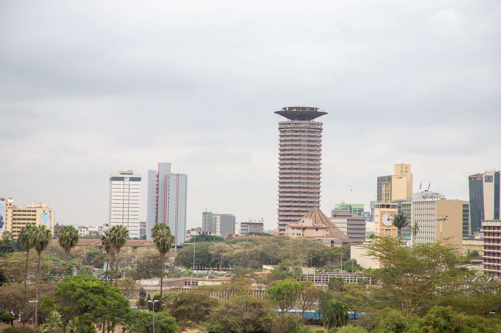

City Scapes

 


More Pictures

Kenya, a remarkable African nation, captivates with its rich wildlife, stunning landscapes,
vibrant culture, ancient heritage, and bustling cities that showcase the country's dynamic spirit and natural wonders
